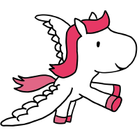

Pre-commit hooks that catch Django problems early.

the problems
missing migration
F821 · leftover pdb
leftover breakpoint
crash-loop after deploy
secret in history
format war
then the tool
the only sentence to take home
Local hooks protect the people who installed them.
CI protects the repo.
how this talk runs
this screen
02 / 30
Many of us have introduced these.
The dark bar is the file I open. Arrow keys here.
the IDE
the repo is the talk
.pre-commit-config.yaml the stack .github/workflows/pre-commit.yml the CI gate catalog/views.py demo 1 · breakpoint catalog/checks.py demo 2 · system check catalog/models.py demo 3 · missing migration scripts/demo-*.sh what I type, 45 seconds each
A manage.py check failure reached staging because one machine had the hook, and another did not.
git add, commit the old bug.exclude: is a regex, not gitignore. ^/migrations/ matches almost nothing in an app folder.types: [python] on whitespace means templates and YAML are never checked.# does not match apps/billing/migrations/0007.py exclude: "^/migrations/" # does exclude: "migrations/"
breakpoint(), merge markers--profile black → blackcheck, then makemigrations --checkdebug-statements catches last night’s breakpoint().detect-private-key catches PEM headers.AWS keys, GitHub PATs, a Django SECRET_KEY in settings. That needs detect-secrets, gitleaks, or a regex. Say this to your team.
mypy on Django migrations will fail a legacy tree and get the hook deleted. Tests are allowed to assert — skip bandit B101.
--all-files.- repo: local
hooks:
- id: django-system-check
entry: python manage.py check
language: python
additional_dependencies: ["django>=5.1"]
pass_filenames: false
always_run: true
pass_filenames: false, Git paths get appended. manage.py check views.py is not a command. The hook gets removed.checks.py do nothing until AppConfig.ready() imports them.live · or the next two slides
breakpoint() + a PEM keymanage.py check / catalog.E001debug-statements....................................................Failed - hook id: debug-statements - exit code: 1 catalog/views.py:5: breakpoint() detect-private-key..................................................Failed - hook id: detect-private-key secrets/id_rsa: RSA private key
django-system-check.................................................Failed
SystemCheckError: System check identified some issues:
ERRORS:
?: (catalog.E001) BROKEN_ON_PURPOSE is True.
A system check failure like this is what used to reach staging.
how it looks when it is working
black...............................................................Passed flake8..............................................................Passed mypy................................................................Passed django-system-check.................................................Passed django-unmigrated-models............................................Passed [main abc1234] fix: health check
pre-commit install. New clone. New hire. The yaml sits in git and does nothing.git commit --no-verify — the hook file is skipped for this one commit.SKIP=debug-statements git commit — one hook silenced, the rest look green.# GitHub Actions · branch protection · cannot merge red $ pre-commit run --all-files debug-statements....................................................Failed - catalog/views.py:5: breakpoint() django-system-check.................................................Failed - catalog.E001 BROKEN_ON_PURPOSE is True
Local hooks are advisory. Make this check required on the branch. Not optional. Not “we’ll look at the red X”.
# .github/workflows/pre-commit.yml
- uses: actions/setup-python@v5
- run: pip install -r requirements.txt
- uses: pre-commit/action@v3.0.1
Local hooks protect the people who installed them.
CI protects the repo.
pre-push or CI.detect-private-key as a secrets program.optional · two minutes · no vendors
Deterministic checks can block a commit. Probabilistic reviewers can only advise.
Models are fluent. They are not embarrassed. You need more gates, not fewer.
.pre-commit-config.yamlmigrations/ on mypy on purpose.pass_filenames: falseYour machine protects you. CI protects everyone else. The file is the same.
github.com/mabukhashabeh/django-day-cph-2026
two questions · then the hallway
I will take two here. Then I am outside.
github.com/mabukhashabeh/django-day-cph-2026